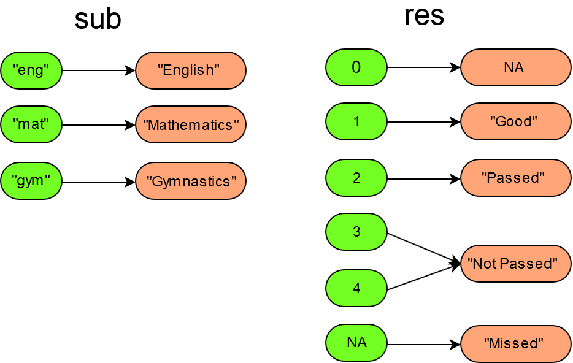

vignettes/create_dictionaries.Rmd
create_dictionaries.RmdAs already described in Get started we need translations, which tell us how the labels should be assigned to the different values of a variable. These translations are collected in a lama-dictionary object. With the labelmachine package, translations can be written as named character vectors:
The names of the character vector items correspond to the original values (e.g.: "eng", "mat" and "gym") and the item values correspond to the new labels which should be used (e.g.: "English", "Mathematics" and "Gymnastics").
Lama-Dictionaries always assume that the original variables are of type character. Even if they are not, it does not make a difference, since when calling lama_translate() the original variables of different types (logical, numeric or factor) will automatically be transformed into character variables. Hence, labelmachine can handle any type of variables.
With the command new_lama_dictionary() a lama-dictionary can be created on the fly:
library(labelmachine)
dict <- new_lama_dictionary(
sub = subject_translation,
res = c(
"1" = "Good",
"2" = "Passed",
"3" = "Not passed",
"4" = "Not passed",
NA_ = "Missed",
"0" = NA
)
)
dict
#>
#> --- lama_dictionary ---
#> Variable 'sub':
#> eng mat gym
#> "English" "Mathematics" "Gymnastics"
#>
#> Variable 'res':
#> 1 2 3 4 NA_
#> "Good" "Passed" "Not passed" "Not passed" "Missed"
#> 0
#> NAEach named argument in new_lama_dictionary() defines a translation. The passed in argument names are used as translation names (e.g. "sub" and "res"). The first translation sub was given by a named character vector, holding the full length labels for the subjects of a data set holding encoded subject values (e.g. "eng" for "English", "mat" for "Mathematics" and "gym" for "gymnastics"). The second translation res holds the full length labels for the encoded test results. In translation res multiple values were mapped onto a single label string (e.g. 3 and 4 were mapped onto "Not passed"). The expression NA_ in translation res is used to escape the missing value symbol NA (only necessary in the name fields of the translation vectors). Hence, the last assignment NA_ = "Missed" defines that missing values should be labeled with the string "Missed". The last expression "0" = NA given in translation res tells that all zero values 0 should be mapped onto the missing value symbol NA.

If we have a named list object holding translations (named character vectors), then we can turn it into a lama-dictionary object with the command new_lama_dictionary():
obj <- list(
sub = c(eng = "English", mat = "Mathematics", gym = "Gymnastics"),
res = c(
"1" = "Good",
"2" = "Passed",
"3" = "Not passed",
"4" = "Not passed",
NA_ = "Missed",
"0" = NA
)
)
dict <- new_lama_dictionary(obj)
dict
#>
#> --- lama_dictionary ---
#> Variable 'sub':
#> eng mat gym
#> "English" "Mathematics" "Gymnastics"
#>
#> Variable 'res':
#> 1 2 3 4 NA_
#> "Good" "Passed" "Not passed" "Not passed" "Missed"
#> 0
#> NAAs described in Get started lama-dictionaries can be saved to yaml files. These files are plain text files with a specific structure. For example the file dictionary.yaml may looks as follows
sub:
eng: English
mat: Mathematics
gym: Gymnastics
res:
'1': Good
'2': Passed
'3': Not passed
'4': Not passed
NA_: Missed
'0': .na.character
lev:
b: Basic
a: AdvancedOn the top level (no indentation) there are the translation names followed by a colon (e.g. sub:, res: and lev:) the following lines describe the label assignment rules of the translation (indentation of two whitespaces ` ). Each line contains a single label assignment, where the original value comes first (use quotes in case of a numeric or logical, e.g.‘1’: “Very good”`), followed by a colon and then comes the label, which should be assigned to the value. The file shown above contains the following translations:
sub, which assigns
"English" to the value eng
"Mathematics" to the value mat
"Gymnastics" to the value gym
res, which assigns
"Good" to the value 1
"Passed" to the value 2
"Not passed" to the values 3 and 4
"Missed" to the missing value NA
NA to the value 0
lev, which assigns
"Basic" to the value "b"
"Advanced" to the value "a"
With the command lama_read() a lama-dictionary can be loaded:
path_to_file <- system.file("extdata", "dictionary_exams.yaml", package = "labelmachine")
dict <- lama_read(path_to_file)With the command lama_write() the lama-dictionary dict can be saved as a yaml file:
Sometimes, there are already csv or excel files or data frames holding label assignment rules. Normally this assignment rules are stored as column pairs, where one column always represents the original values and the other column holds the corresponding label strings. In case of the assignments are stored in a csv or an excel file, they can be loaded into a data frame with the commands read.csv() or read.table(). Hence, it is sufficient to cover the case of label assignment rules given as data frames.
Let df_trans be a data frame holding the label assignment rules:
df_trans
#> sub_old sub_new res_old res_new
#> 1 eng English 0 <NA>
#> 2 mat Mathematics 1 Good
#> 3 gym Gymnastics 2 Passed
#> 4 <NA> <NA> 3 Not passed
#> 5 <NA> <NA> 4 Not passed
#> 6 <NA> <NA> NA MissedThe command as.lama_dictionary reads in the label assignment rules given in df_trans and returns a lama-dictionary object holding the given translations:
dict <- as.lama_dictionary(
.data = df_trans,
translation = c("sub", "res"),
col_old = c("sub_old", "res_old"),
col_new = c("sub_new", "res_new")
)
dict
#>
#> --- lama_dictionary ---
#> Variable 'sub':
#> eng mat gym
#> "English" "Mathematics" "Gymnastics"
#>
#> Variable 'res':
#> 0 1 2 3 4
#> NA "Good" "Passed" "Not passed" "Not passed"
#> NA_
#> "Missed"The resulting lama-dictionary dict contains two translations sub and res.
The command as.lama_dictionary() also allows an argument ordering, which specifies how the ordering of the translations should be determined. For further details, see as.lama_dictionary().